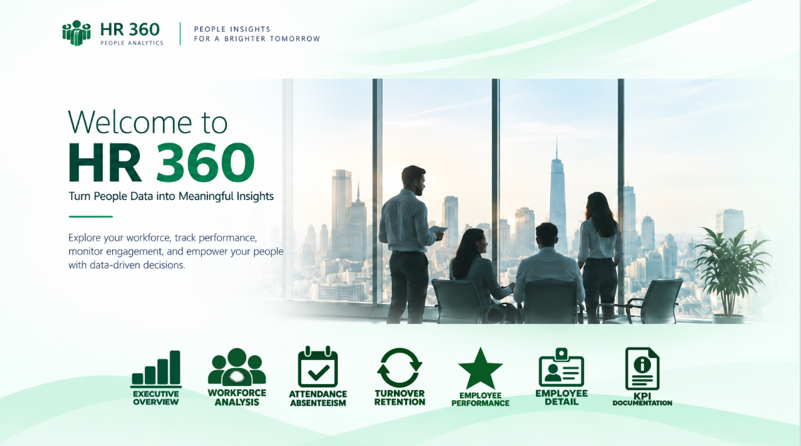

Power BI · HR Analytics · People Analytics
HR 360
Workforce & People Analytics
Solution Power BI dédiée au pilotage des ressources humaines. HR 360 centralise les données d'effectif, d'absentéisme, de turnover, de performance, de rémunération, de formation et de parcours collaborateur afin de transformer les données RH en informations décisionnelles.

Contexte du projet
Besoin métier
Fournir à la Direction RH et aux managers une vision consolidée de la population, des mouvements d'effectifs, de l'absentéisme, de la rétention, de la performance et du développement des collaborateurs.
Solution BI
Construction d'un modèle Power BI RH multi-faits avec dimensions partagées, transformations Power Query, mesures DAX, navigation multi-pages et fiche individuelle permettant d'analyser le parcours complet d'un collaborateur.
Principaux indicateurs
WorkforceHeadcount
AttendanceAbsenteeism Rate
MovementHires
MovementTerminations
RetentionTurnover Rate
RetentionRetention Rate
CompensationPayroll Cost
PerformancePerformance Score
QualityQuality Score
ProductivityProductivity Score
DevelopmentTraining Hours
CareerPromotion Recommendation
Points techniques
Data Modeling & DAX
- Modèle RH multi-faits avec dimensions Employee, Date, Department et Position.
- Gestion de grains différents selon les données mensuelles, évaluations, formations et historique de poste.
- Mesures DAX pour Headcount, turnover, rétention, absentéisme, payroll et performance.
- Calculs temporels et analyse dynamique selon les filtres RH.
Employee 360
- Fiche individuelle détaillée par collaborateur.
- Identité, poste, manager, contrat, mode de travail et niveau professionnel.
- Performance, rémunération, compétences, diplômes et formations.
- Historique de carrière, évaluations et informations de départ conditionnelles.
Pages du dashboard


Compétences démontrées
Employee Detail
La page Employee Detail constitue une vue individuelle complète du collaborateur : informations personnelles et professionnelles, poste, niveau de carrière, prochaines évaluations, historique de poste, rémunération, performance, compétences, diplômes, formations, présence et informations de sortie lorsqu'elles existent.